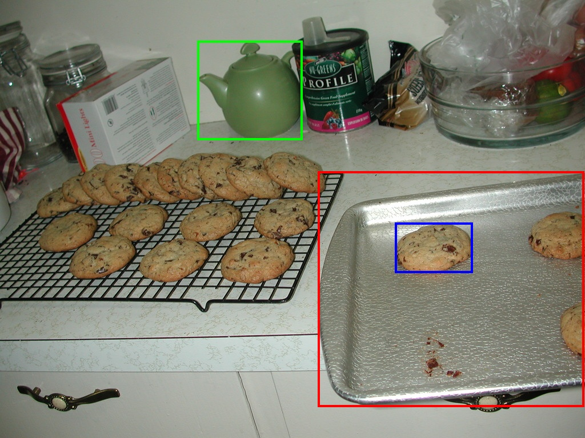
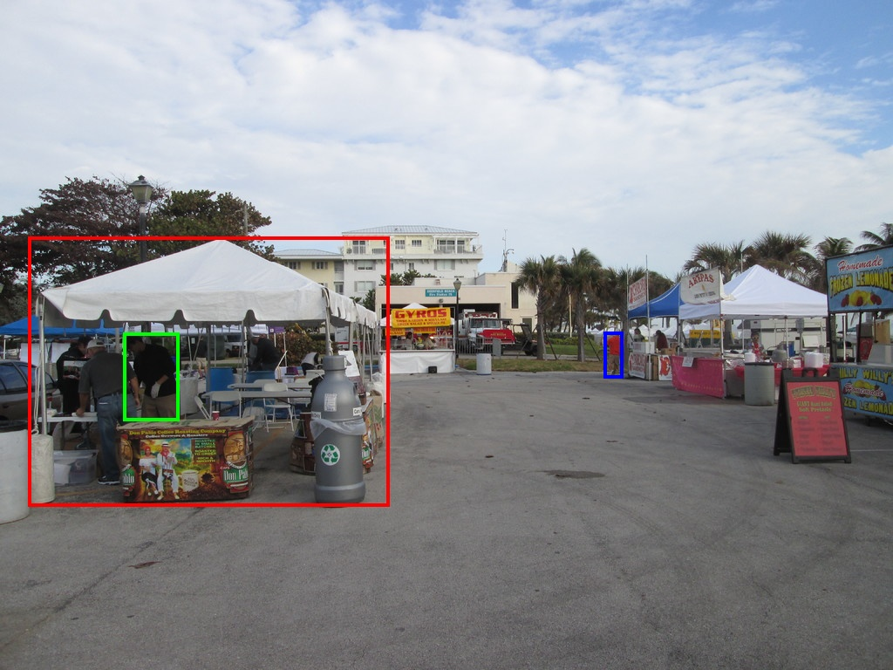
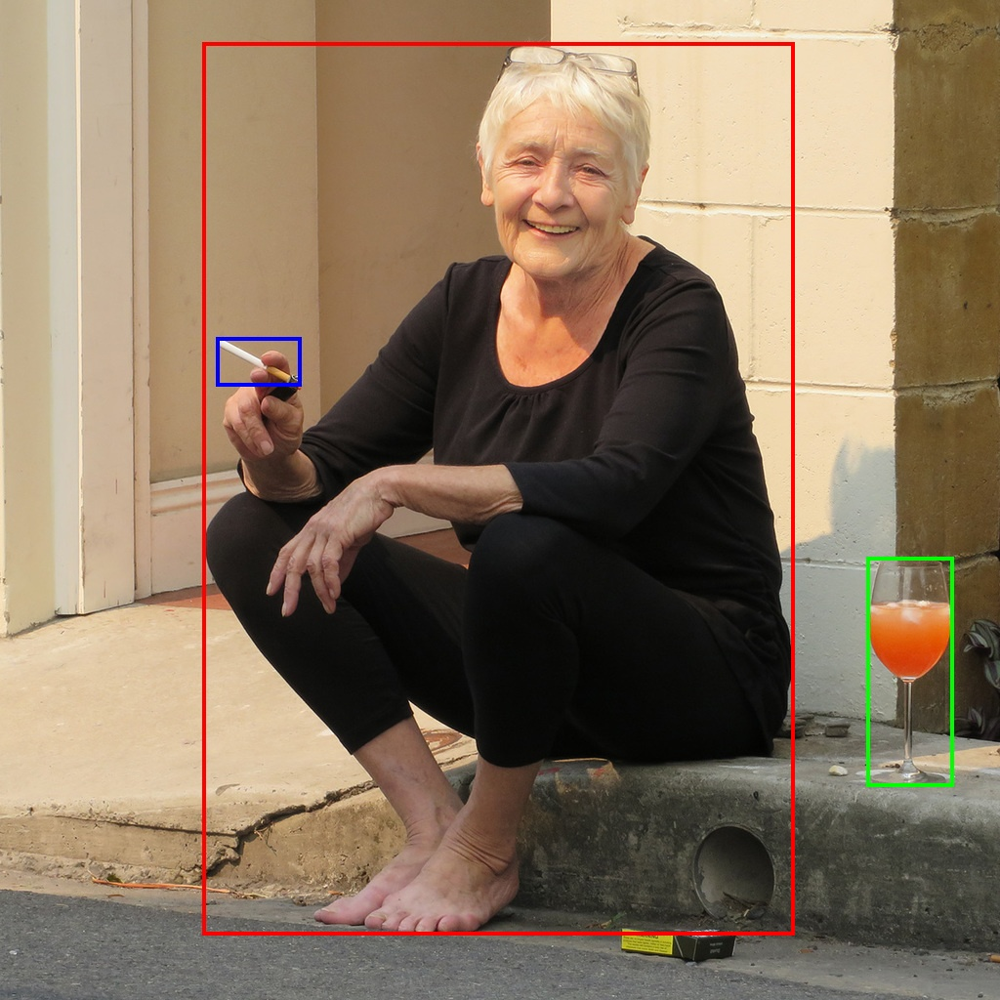

A benchmark for perceptual taxonomy reasoning — testing whether vision-language models can jointly integrate material, physical, affordance, and functional properties to reason about physical scenes, beyond single-property recognition.
Abstract
Reasoning about objects in the physical world requires understanding both the spatial structure of a scene and the properties of objects within it. We formalize this process as Perceptual Taxonomy, a hierarchical framework that organizes visual understanding into structured scene → object → property representations. Existing benchmarks cover only parts of this framework, missing a challenging yet practical capability: cross-property reasoning, where a model must simultaneously integrate reasoning across all property families to answer questions about physical environments.
We introduce PercepTax, a benchmark for perceptual taxonomy reasoning. We annotate 3,173 object classes with 54 fine-grained attributes across four property families: material, physical attributes, affordance, and function. It contains 5,802 images from synthetic and real domains and 28,033 questions spanning object description, single-property recognition, 3D spatial reasoning, and cross-property reasoning.
State-of-the-art VLMs perform strongly on object description and single-property tasks, but accuracy drops sharply on cross-property reasoning (e.g. GPT-5: 87% → 40% on real images). Oracle experiments with ground-truth properties and taxonomy-guided in-context learning both improve performance yet remain well below human levels — confirming that both visual perception of individual properties and their cross-property integration are bottlenecks for VLMs.
Property Taxonomy
Every object receives a complete profile across all four families simultaneously — the prerequisite for cross-property reasoning. We annotate 3,173 object classes with many-to-many mappings to 54 fine-grained attributes.
The object's visual and physical substance (e.g., paper, metal, wood), which determines its rigidity, weight, texture, and durability.
14 material types
Intrinsic characteristics governing how the object behaves under external forces: rigidity, fragility, elasticity, mass, or stability.
17 physical properties
The actions the object enables based on its shape and components (graspable, supportable, sit-on, containable), independent of intended purpose.
10 affordances
The object's intended role when invented (e.g., seating furniture, storage container, display signage), reflecting how humans typically use it.
13 functions
Benchmark Design
PercepTax evaluates all levels of perceptual taxonomy on the same scenes and objects, from object localization to multi-attribute inference. Cross-property reasoning — our key new task — makes up the majority (56.7%) of the 28,033 questions.
Example
Every question deliberately crosses several physical properties. Solving it requires reasoning through those properties — not just recognizing the object. Each example below shows the full chain: Question (which properties cross) → Reasoning with properties → Answer. The candidate objects are marked by colored boxes in the image.

Question · crosses 3 properties
What object in the scene can someone grab and repurpose as a shield to block danger?
Properties in play
Material Physical AffordanceReasoning with properties
A shield must be made of a hard, impact-resistant material — sheet metal deflects a blow, unlike a ceramic teapot that would shatter.
It needs a broad, flat, rigid surface large enough to cover the body.
The baking sheet is light with a liftable edge to grip; the teapot is small and brittle, and the cookie offers no protection.

Question · crosses 2 properties
Which object is solid and movable, but clearly not intended to hold other things?
Properties in play
Physical FunctionReasoning with properties
First keep objects that are both solid and movable — this rules out the person (not rigid).
Then subtract anything whose purpose is containment. The market stall is a solid, relocatable display fixture — it holds nothing itself.

Question · crosses 2 properties
If someone accidentally spills water here, which object would be damaged first?
Properties in play
Material PhysicalReasoning with properties
Rank objects by water sensitivity — paper and pulp absorb water; glass and skin do not.
The most porous, absorbent item degrades fastest. The wine glass is non-porous; the cigarette is paper-wrapped pulp that wicks water and falls apart.
Experimental Results
Open-ended accuracy on the Real-Image set (responses judged by a Gemini verifier). Models excel at object description but collapse on cross-property reasoning — far below the human upper bound.
| Model | Spatial | Obj. Desc. | Single-Prop. | Cross-Prop. | Overall |
|---|---|---|---|---|---|
| Human Upper bound | 89.70% | 91.11% | 88.15% | 92.96% | 90.48% |
| Gemini 2.5 Pro Closed | 74.30% | 84.70% | 55.29% | 53.00% | 57.38% |
| GPT-5 Closed | 76.23% | 87.06% | 47.77% | 39.84% | 48.78% |
| Claude Sonnet 4.5 Closed | 69.38% | 66.67% | 43.59% | 32.95% | 42.48% |
| Qwen3-VL-32B Open | 72.16% | 81.18% | 50.37% | 41.66% | 50.08% |
| InternVL3.5-30B Open | 76.23% | 72.16% | 37.06% | 25.57% | 37.32% |
| Qwen3-VL-8B Open | 73.23% | 77.65% | 45.04% | 39.08% | 46.54% |
GPT-5 drops from 87.06% on object description to 39.84% on cross-property reasoning. Even the best model (Gemini, 53.00%) stays far below the 92.96% human level.
Oracle ground-truth properties lift accuracy (+20% single-property), yet cross-property reasoning stays well below human — the deeper limit is compositional integration, not just perception.
One simulation exemplar with structured property cues improves real-image cross-property reasoning by up to +9.56% (Gemini 53.00→54.86, GPT-5 39.84→43.60), confirming sim-to-real transfer.
Citation
@inproceedings{lee2026perceptax,
title={PercepTax: Benchmarking Physical Intelligence through
Cross-Property Reasoning in Vision-Language Models},
author={Lee, Jonathan and Wang, Xingrui and Peng, Jiawei and
Ye, Luoxin and Zheng, Zehan and Zhang, Tiezheng and
Wang, Tao and Ma, Wufei and Chen, Siyi and
Chou, Yu-Cheng and Kaushik, Prakhar and Yuille, Alan},
booktitle={European Conference on Computer Vision (ECCV)},
year={2026}
}